เครื่องมือ ≣ (B) = ลากจากพอร์ต >1 bit ของ component
สร้างบัส · คลิกสายบัส = วาง Bus Tap · ล้อ/Space+ลาก เลื่อนจอ ·
Ctrl+ล้อ ซูม · Del ลบ · F7 ตรวจ
เปิดไฟล์นี้ด้วยเบราว์เซอร์ ไม่ต้องติดตั้งอะไรเพิ่ม หน้าจอแบ่งเป็น 5 ส่วน
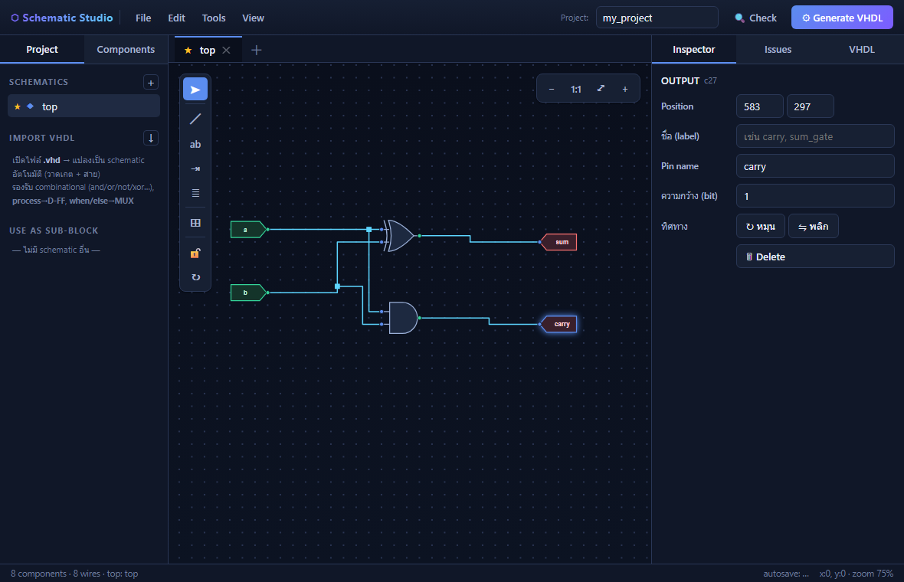
| ส่วน | ตำแหน่ง | ใช้ทำอะไร |
|---|---|---|
| แถบเมนู | บนสุด | File / Edit / Tools / View, ชื่อโปรเจกต์, ปุ่ม Check (ตรวจวงจร) และ Generate VHDL |
| แผงซ้าย | ซ้าย | แท็บ Project = รายชื่อ schematic, นำเข้า .vhd, ใช้แผ่นอื่นเป็นบล็อกย่อย · แท็บ Components = คลังชิ้นส่วน |
| Canvas | กลาง | พื้นที่วาดวงจร มีแถบเครื่องมือแนวตั้งอยู่ซ้ายบน และตัวควบคุมซูมอยู่ขวาบน |
| แผงขวา | ขวา | Inspector ปรับค่าของสิ่งที่เลือก · Issues ผลการตรวจ · VHDL โค้ดที่สร้างได้ |
| แถบสถานะ | ล่างสุด | จำนวนชิ้นส่วนและสาย, แผ่นที่เป็น top, สถานะ autosave, พิกัดเมาส์ และระดับซูม |
| ปุ่ม | คีย์ | หน้าที่ |
|---|---|---|
| ➤ เลือก | Esc | เลือกและลากย้ายชิ้นส่วน ลากคลุมเพื่อเลือกหลายชิ้น |
| ╱ สาย | W | ต่อสาย คลิกขา → คลิกขา หรือคลิกกลางสายเดิมเพื่อแตกสาย |
| ab ชื่อ net | N | คลิกที่สายเพื่อตั้งชื่อสัญญาณ |
| ⇥ I/O marker | I | คลิกขาที่ว่างเพื่อแปะพอร์ต INPUT หรือ OUTPUT ให้ทันที |
| ≣ Bus Tap | B | วางจุดแตก/รวมบิตบนสายบัส |
| ⊞ Symbol | — | เปิดแผง Components |
| 🔓 ล็อกการจัดวาง | — | ตรึงตำแหน่งทุกอย่างที่วางไว้ — ชิ้นส่วน สาย และจุดต่อ ขยับไม่ได้ทั้งโปรแกรมและผู้ใช้ แต่ยังเลือก ต่อสายเพิ่ม ตั้งชื่อ และลบได้ตามปกติ |
| ↻ จัดสายใหม่ | — | จัดเส้นสายทั้งแผ่นใหม่ ทำครั้งเดียวตามสั่ง ไม่ทำเองอัตโนมัติ |
การเลื่อนจอ
หมุนล้อเมาส์ = เลื่อนขึ้นลง · กด Space ค้างแล้วลาก = เลื่อนอิสระ · Ctrl+ล้อ = ซูม · Home = ย่อให้เห็นทั้งวงจร
เปิดแท็บ Components ที่แผงซ้าย แล้วลากชิ้นส่วนมาวางบน canvas (หรือคลิกที่ชิ้นส่วน — โปรแกรมจะวางลงกลางมุมมองให้ทันที แล้วค่อยลากไปที่ที่ต้องการ)
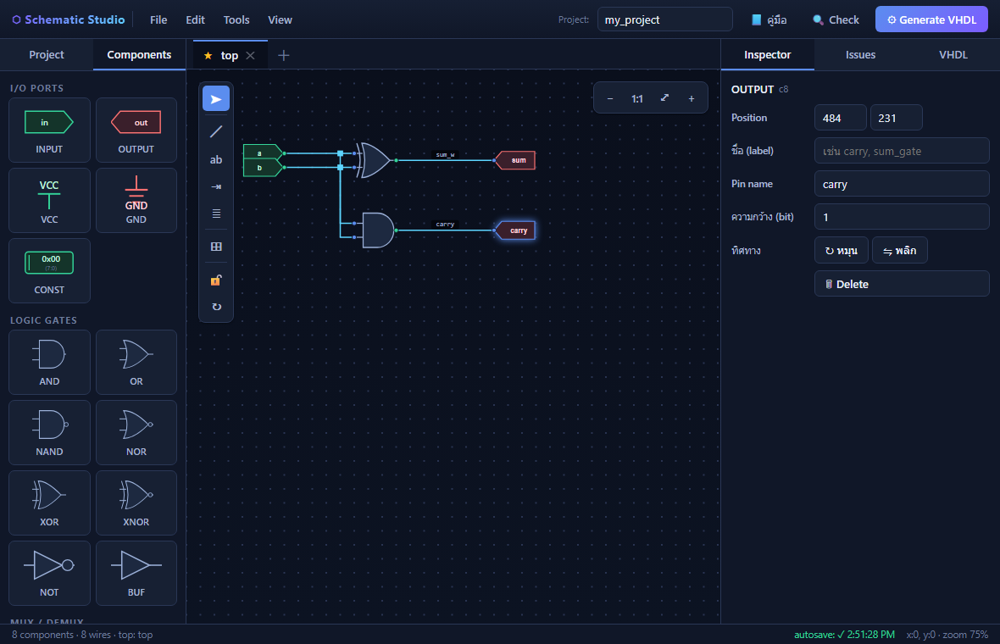
| หมวด | ชิ้นส่วน | หมายเหตุ |
|---|---|---|
| I/O PORTS | INPUT · OUTPUT · VCC · GND · CONST | INPUT/OUTPUT คือขาของ entity ที่จะออกไปเป็นพอร์ตใน VHDL ตั้งชื่อและกำหนดความกว้างบิตได้ · VCC/GND ยึดสาย 1 บิตไว้ที่ '1'/'0' · CONST ยึดทั้งบัสไว้ที่ค่าคงที่ตั้งเอง กรอกเป็นเลขฐานสิบหก (เช่น F4 หรือ 0xF4) เอาไว้ล็อกขา OUTPUT หรือสตรัปขาของบล็อกย่อยให้คงที่ |
| LOGIC GATES | AND · OR · NAND · NOR · XOR · XNOR · NOT · BUF | เกตสองอินพุตขึ้นไปเพิ่มจำนวนขาได้ใน Inspector |
| MUX / DEMUX | MUX · DEMUX | เลือกจำนวนช่องได้ 2, 4, 8, 16 |
| ENCODER / DECODER | ENCODER · DECODER | ขนาด 4, 8, 16 |
| COMPARATOR | COMP · COMPM | COMP ตรวจ "เท่ากัน" · COMPM ให้ผล "มากกว่า/น้อยกว่า" ขนาด 2 และ 4 บิตแยกขาทีละบิต ส่วน 8 และ 16 บิตใช้ขาบัสข้างละเส้น |
| BUS TAP | Bus Tap | จุดแตกหรือรวมบิตบนสายบัส ดูหัวข้อ 04 |
| FLIP-FLOPS | D-FF · JK-FF · T-FF · SR-FF | ต้องต่อขา CLK เสมอ ไม่งั้นจะไม่ถูกสร้างเป็นวงจร · ทุกตัวมี Q และ Q̅ · เปิด Async reset (clear) / Async preset ได้ใน Inspector — ดูหัวข้อ 14 |
ยังมี จุดต่อสาย (junction) อีกหนึ่งชนิดที่ไม่มีในคลัง เพราะโปรแกรมสร้างให้เองเมื่อสายหนึ่งแตกไปหลายทาง
ย้าย หมุน ทำซ้ำ
ลากเพื่อย้าย · R หมุน 90° (Shift+R หมุนกลับทาง) · M พลิกซ้ายขวา · Ctrl+D ทำซ้ำ · ปุ่มลูกศรขยับทีละหนึ่งช่องกริด
ขา 1 บิตมีจุดกลมเล็ก ๆ ที่ปลาย ส่วนขาบัสเป็นสี่เหลี่ยมเล็ก ๆ แบบ ISE — คลิกที่เครื่องหมายนั้นคือการเริ่มหรือจบสาย
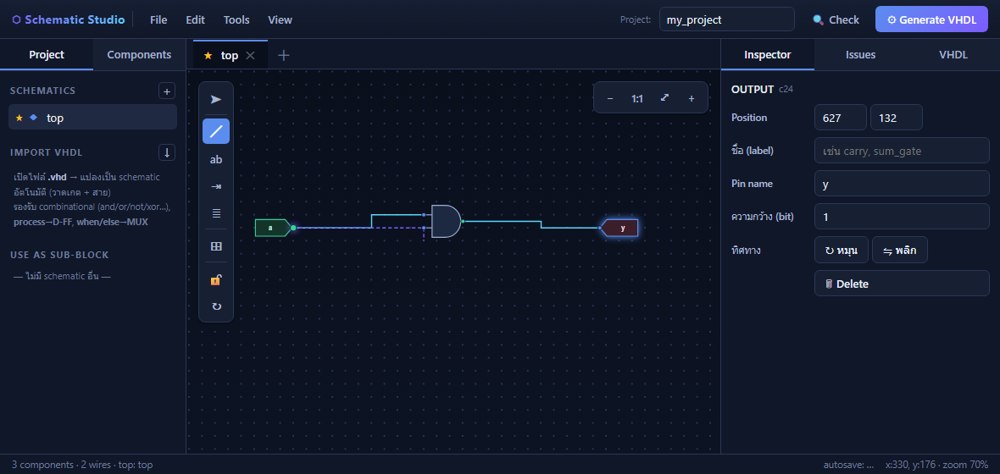
ระหว่างลาก กด Esc เพื่อยกเลิก หรือ Enter เพื่อจบสายไว้กลางอากาศ
ถ้าสัญญาณหนึ่งต้องไปหลายที่ ให้คลิกที่ กลางสายเส้นเดิม แล้วคลิกขาปลายทาง โปรแกรมจะสร้างจุดต่อ (dot) ตรงตำแหน่งที่คลิกพอดี
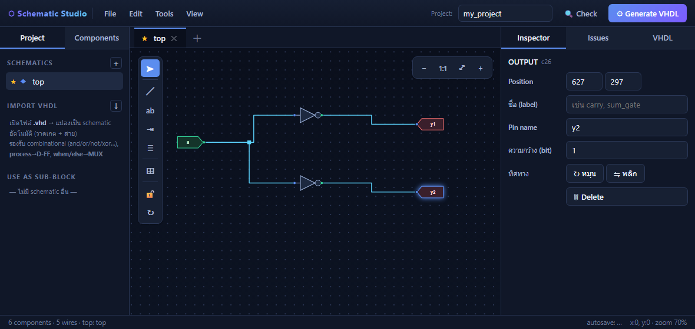
ผูกขา input สองขาเข้าด้วยกันได้
คลิกขา input ของสองชิ้นติดกัน โปรแกรมจะผูกทั้งคู่ไว้บนเน็ตเดียว เมื่อลากแหล่งจ่ายมาต่อทีหลัง ทั้งสองขาจะได้สัญญาณพร้อมกัน
หนึ่งเน็ต หนึ่งตัวขับ
เอาต์พุตสองตัวต่อเข้าเน็ตเดียวกันไม่ได้ ถ้าลากไปแตะสายที่มีตัวขับอยู่แล้ว โปรแกรมจะปฏิเสธพร้อมบอกเหตุผล
บัสคือสายที่กว้างกว่า 1 บิต เกิดจากการตั้ง ความกว้าง (bit) ให้พอร์ต IN/OUT หรือใช้ขาบัสของชิ้นส่วน สายบัสวาดหนากว่าสายปกติเสมอ (ธีมมืดใช้สีม่วงแยกจากสายสีฟ้า ส่วนธีม ISE เป็นน้ำเงินเดียวกันต่างที่ความหนา — ตามแบบ ISE จริง)
Bus Tap คือตัวเชื่อมระหว่างบัสกับสายที่แคบกว่า — หนึ่งอันดูแลหนึ่งบิต หรือหลายบิตติดกันก็ได้ วางได้สองทาง
Bus Tap หนึ่งอันไม่จำเป็นต้องดึงทีละบิต — ช่อง จำนวนบิต ใน Inspector บอกว่าจะเอาออกมากี่บิต
คู่กับช่อง บิตเริ่มที่ ก็ได้ช่วงบิตตามต้องการ เช่นเริ่มที่บิต 4 จำนวน 4 บิต คือ d(7:4)
บนสัญลักษณ์จะขึ้นเป็น 7:4 แทนเลขเดี่ยว และสายที่ออกจากปลายแหลมกลายเป็นบัสกว้างเท่านั้น
ต่อเข้าขาบัสของชิ้นส่วนอื่นหรือของบล็อกย่อยได้ทันที
| ตั้งค่า | โค้ดที่ได้ (แตกจากบัส d) | ใช้ตอนไหน |
|---|---|---|
| บิตเริ่ม 0 · จำนวน 1 | d(0) | ดึงทีละบิตเข้าเกตธรรมดา (ค่าตั้งต้น) |
| บิตเริ่ม 0 · จำนวน 4 | d(3 downto 0) | ส่งครึ่งล่างเข้าบล็อกย่อยที่รับ 4 บิต |
| บิตเริ่ม 4 · จำนวน 4 | d(7 downto 4) | ครึ่งสูงของบัส 8 บิต |
ฝั่ง merge ก็ทำได้เหมือนกัน — tap สองอันขนาด 4 บิต ประกอบเป็นพอร์ต 8 บิตได้เลย:
q(3 downto 0) <= lo; กับ q(7 downto 4) <= hi;
สลิซต้องอยู่ในขอบบัส
เริ่มที่บิต 6 แล้วขอ 4 บิตจากบัส 8 บิต จะเลยขอบไปถึงบิต 9 ซึ่งไม่มีจริง — Issues จะฟ้อง "Bus Tap แตะบิต 9:6 แต่บัสมีแค่ (7:0)" และตัวสามเหลี่ยมจะเป็นสีแดงบนผัง ตั้งค่าใน Inspector จะถูกตัดให้พอดีกับขอบให้เอง
ตรวจโหมดเองเสมอ
โปรแกรมเดาโหมดเฉพาะตอนวาง tap และเดาผิดได้ — คลิกที่ tap แล้วดู Inspector ทุกครั้ง: ช่อง ทิศทางบิต (split = อ่านบิตออกจากบัส, merge = เขียนบิตเข้าบัส) และช่อง บิตที่ ว่าตรงกับบิตที่ต้องการ ทั้งสองช่องแก้ได้ตรงนั้นเลย
d(3:0)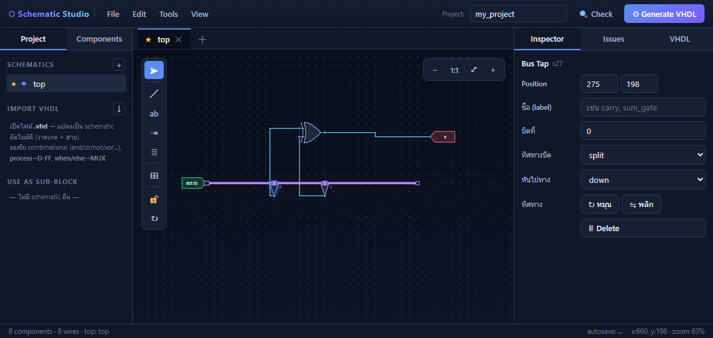
d(3:0) ถูกดึงเข้าเกต XOR — Inspector ทางขวาคือช่อง
"บิตที่" และ "ทิศทางบิต" ของ tap ที่เลือกอยู่ทิศกลับกันใช้ท่าเดียวกัน: ตั้งความกว้างที่พอร์ต OUTPUT ลากรางบัสจากพอร์ตแล้วปล่อยปลายเปิดไว้ วาง tap ทีละบิต แล้วลากสายจากขา output ของเกตมาเข้าปลายแหลมของ tap — โหมดจะสลับเป็น merge ให้เอง ในรูปคือ half adder ที่ sum เข้าบิต 0 และ carry เข้าบิต 1
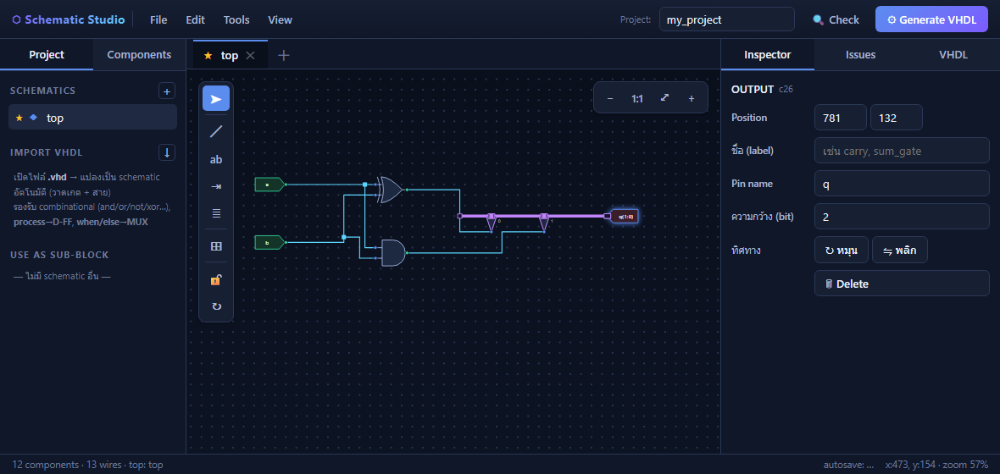
q(1:0) —
ปลายเปิดของรางบัสด้านซ้ายปล่อยค้างไว้ได้ความกว้างต้องตรงกัน
สายบัสต่อตรงเข้าขาที่ความกว้างไม่เท่ากันไม่ได้ทั้งสองทิศ (4 บิตเข้า 1 บิต หรือ 4 บิตเข้า 8 บิต ก็ผิดทั้งคู่) Issues จะบอกจำนวนบิตของทั้งสองฝั่งให้ ถ้าต้องการบิตเดียวจากบัสให้ใช้ Bus Tap และเลขบิตต้องไม่เกินความกว้างของบัส
คลิกชิ้นส่วนหรือสายหนึ่งครั้ง แท็บ Inspector จะแสดงค่าที่แก้ได้ทั้งหมดของสิ่งนั้น (ถ้าแผงขวาค้างอยู่ที่ Issues หรือ VHDL ให้ดับเบิลคลิกหรือคลิกขวาที่ชิ้นส่วน โปรแกรมจะสลับมาที่ Inspector ให้)
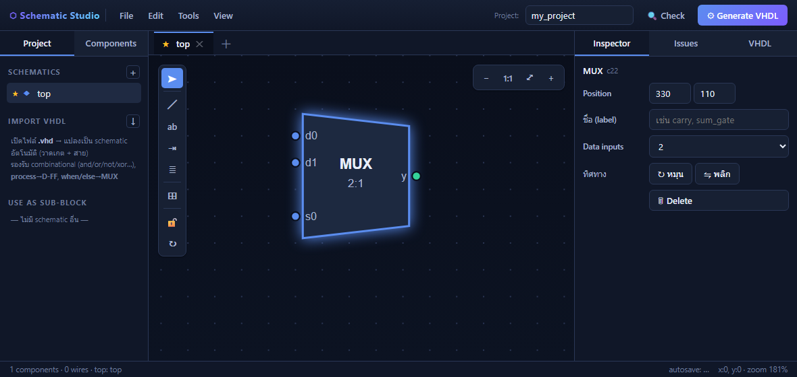
adder (บล็อกย่อยจะถูกเติม u_
ให้เองในโค้ด กลายเป็น u_adder)ลบชื่อ net
ล้างช่อง Net name ให้ว่างแล้วกด Enter คือการ ลบชื่อทิ้ง สัญญาณจะกลับไปใช้ชื่ออัตโนมัติ ถ้ากด Cancel ตอนมันถามชื่อ ชื่อเดิมจะยังอยู่
ปกติโปรแกรมจะจัดแนวสายให้อัตโนมัติเมื่อมีการต่อหรือย้าย ถ้าจัดวางจนพอใจแล้วให้กดปุ่ม 🔓 ล็อกการจัดวาง ที่แถบเครื่องมือ ทุกอย่างจะอยู่กับที่ ทั้งของโปรแกรมและของผู้ใช้เอง เปิดไฟล์กลับมาก็ยังอยู่ตำแหน่งเดิม ถ้าอยากให้จัดใหม่ทั้งแผ่นครั้งเดียว ใช้ปุ่ม ↻ จัดสายใหม่
กด F7 หรือปุ่ม 🔍 Check ผลจะขึ้นที่แท็บ Issues คลิกที่ข้อความเพื่อกระโดดไปยังจุดที่มีปัญหา
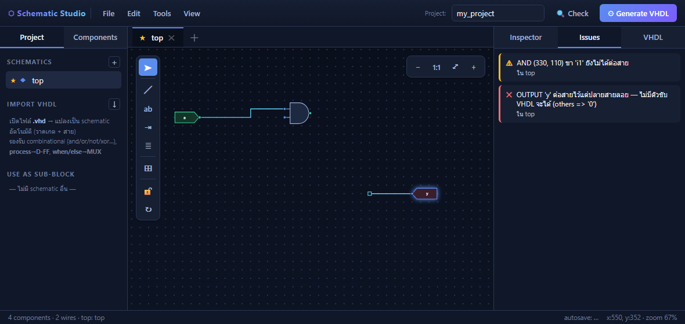
| ระดับ | ข้อความ | แปลว่า / แก้ยังไง |
|---|---|---|
| error | OUTPUT 'x' ต่อสายไว้แต่ปลายสายลอย | มีสายต่ออยู่จริงแต่ปลายอีกด้านจบกลางอากาศ ไม่มีอะไรขับ โค้ดจะออกมาเป็น
(others => '0') คือศูนย์ค้าง ให้ลากปลายสายไปต่อกับตัวขับจริง |
| error | OUTPUT 'x' ยังไม่ได้ต่อสาย | พอร์ตออกยังไม่มีสายเลย |
| error | ความกว้างบัสไม่ตรงกัน | ความกว้างสองฝั่งไม่เท่ากัน — ผิดทั้งสองทิศ (4 บิตเข้า 1 บิต หรือ 4 บิตเข้า 8 บิต) ข้อความบอกจำนวนบิตทั้งสองฝั่ง ใช้ Bus Tap ดึงทีละบิต |
| error | จุดแยกสาย / ขาชิ้นส่วน มีสายเข้าซ้อนกัน N เส้น — driver ชนกัน | มีตัวขับสองตัวบนเน็ตเดียว ลบสายเส้นใดเส้นหนึ่งออก |
| error | ขา 'clk' ยังไม่ได้ต่อสัญญาณนาฬิกา | flip-flop ที่ไม่มีนาฬิกาจะไม่ถูกสร้างเป็นวงจร |
| error | INPUT / OUTPUT ชื่อซ้ำ | พอร์ตสองตัวใช้ชื่อเดียวกัน เปลี่ยนชื่อใดชื่อหนึ่ง |
| error | วงวนลำดับชั้น | แผ่น A ใส่แผ่น B ที่ย้อนกลับมาใช้ A ดูหัวข้อ 08 |
| warn | ขา 'i1' ยังไม่ได้ต่อสาย | ขาเข้าที่ปล่อยว่างจะถูกอ่านเป็น '0' |
| warn | ขา 'i1' ต่อกับสายที่ปลายลอย | เหมือนกับข้างบน แต่หลอกตาเพราะดูเหมือนต่อแล้ว |
| warn | รับนาฬิกาจากวงจร combinational | gated clock — ใช้ได้แต่ไม่ใช่แนวปฏิบัติที่ดีบน FPGA |
อย่าข้ามขั้นนี้
โปรแกรมสร้างโค้ดให้แม้วงจรยังไม่สมบูรณ์ ถ้าปลายสายลอยอยู่ โค้ดจะคอมไพล์ผ่านใน Vivado แต่ผลลัพธ์จะเป็นศูนย์ตลอด ให้ตรวจจน Issues ไม่เหลือสีแดงก่อนเสมอ
กดปุ่ม ⚙ Generate VHDL มุมขวาบน โค้ดจะขึ้นที่แท็บ VHDL
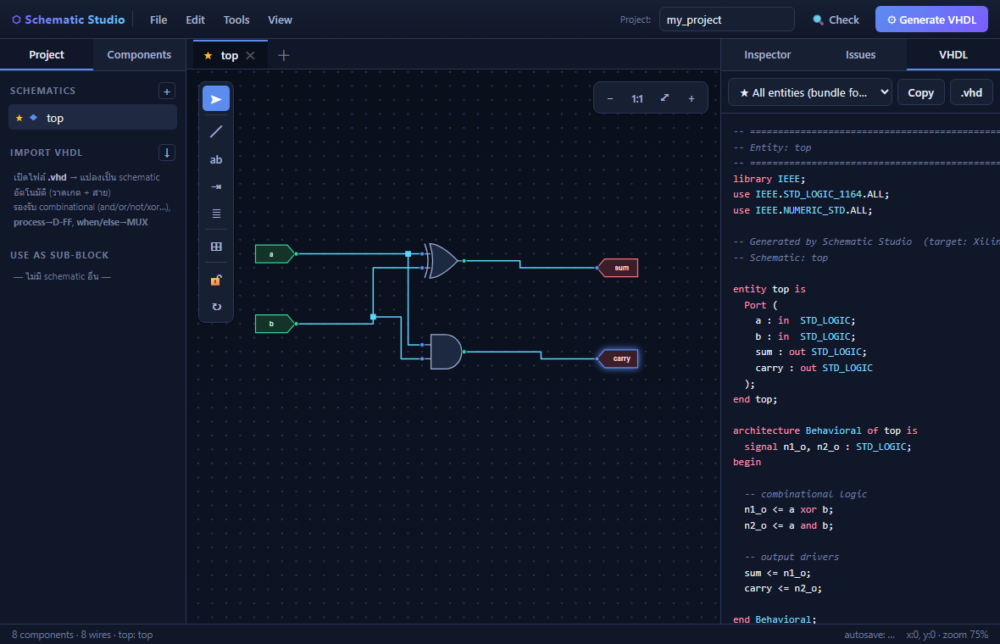
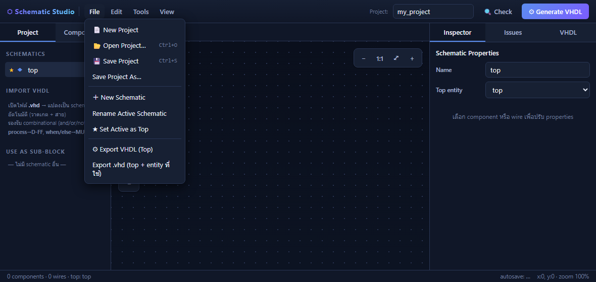
ชื่อไฟล์ไม่ชนกัน
ไฟล์ที่ดาวน์โหลดจะขึ้นต้นด้วยวันเวลา แล้วตามด้วยชื่อที่เหลือแต่ตัวอักษรกับตัวเลข ไม่มีเว้นวรรคและอักขระพิเศษ
เช่น 20260820185428myprojectall.vhd โหลดซ้ำกี่ครั้งก็ไม่ทับกัน และพาธไม่พังตอน
Vivado เรียกใช้
.vhd ที่ดาวน์โหลดมา_ (แผ่น "My Top" ได้ entity my_top)วงจรใหญ่แบ่งเป็นหลาย schematic ได้ แล้วเรียกแผ่นหนึ่งมาใช้เป็นบล็อกในอีกแผ่นหนึ่ง เหมือน component ใน VHDL
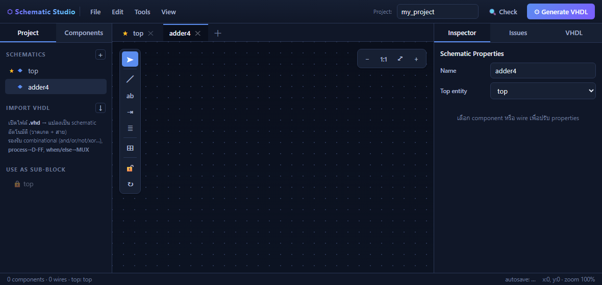
ทำไม top ใช้เป็น sub-block ไม่ได้
แผ่น top คือรากของวงจรทั้งหมด ถ้าเอาไปใส่ในแผ่นที่ top เรียกใช้อยู่ จะกลายเป็นวงวน — VHDL ที่ได้จะให้ top เรียกตัวเอง และ Vivado จะ elaborate ไม่ผ่าน โปรแกรมจึงกันไว้ตั้งแต่ในรายการ รวมถึงแผ่นแม่ทุกใบที่จะทำให้เกิดวงวนด้วย
| งาน | วิธี | ไฟล์ |
|---|---|---|
| บันทึกโปรเจกต์ | File → Save Project หรือ Ctrl+S | .schproj.json |
| เปิดโปรเจกต์ | File → Open Project หรือ Ctrl+O | .schproj.json |
| ส่งออกโค้ด | ปุ่ม .vhd ที่แท็บ VHDL หรือ File → Export VHDL | .vhd |
| นำเข้า VHDL | แผงซ้าย → IMPORT VHDL → เลือกไฟล์ | .vhd .vhdl .txt |
| ใช้วงจรซ้ำ / ส่งต่อวงจร | Export .vhd — โปรแกรมแนบการจัดวางไว้ในคอมเมนต์ท้ายไฟล์ เปิดกลับด้วย IMPORT VHDL ได้ผังเหมือนเดิม | .vhd |
โปรแกรมมี autosave ลงเบราว์เซอร์อยู่แล้ว (ดูสถานะที่แถบล่าง) แต่ autosave อยู่กับเครื่องและเบราว์เซอร์นั้น ต้อง Save Project เป็นไฟล์ ถ้าจะย้ายเครื่องหรือส่งงาน
การนำเข้า .vhd จะแปลงโค้ดกลับเป็นรูปวงจรให้อัตโนมัติ รองรับ combinational (and/or/not/xor…),
process → D-FF และ when/else → MUX
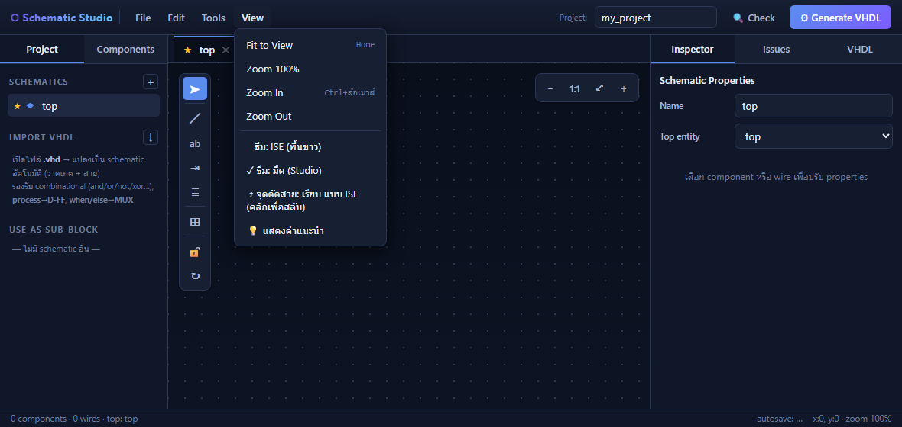
| คีย์ | ทำอะไร | คีย์ | ทำอะไร |
|---|---|---|---|
| W | เครื่องมือสาย | Ctrl+Z | ย้อนกลับ |
| N | ตั้งชื่อ net | Ctrl+Shift+Z / Ctrl+Y | ทำซ้ำที่ย้อน |
| B | Bus Tap | Ctrl+A | เลือกทั้งแผ่น |
| I | แปะ I/O marker | Ctrl+C / Ctrl+V | คัดลอก / วาง (ข้ามแผ่นได้) |
| R / Shift+R | หมุน 90° ตาม / ทวนเข็ม | Ctrl+X | ตัด |
| M | พลิกซ้ายขวา | Ctrl+D | ทำซ้ำ |
| Esc | ยกเลิก / กลับไปเครื่องมือเลือก | Ctrl+S / Ctrl+O | บันทึก / เปิดโปรเจกต์ |
| Delete | ลบสิ่งที่เลือก | Ctrl+N | โปรเจกต์ใหม่ |
| Enter | จบสายที่กำลังลาก | Space + ลาก | เลื่อนจอ |
| Backspace | ถอยจุดหักล่าสุด (ขณะลากสาย) | Ctrl + ล้อ | ซูม |
| ลูกศร | ขยับสิ่งที่เลือกทีละช่องกริด (ไม่ได้เลือกอะไร = เลื่อนมุมมอง) | Home | ย่อให้เห็นทั้งวงจร |
| F7 | ตรวจวงจร | — | — |
ทั้งหมดนี้คือปัญหาที่วงจร "ดูถูก" แต่โค้ดออกมาผิด
อาการคือเอาต์พุตเป็นศูนย์ตลอด ทั้งที่ตรรกะข้างในถูกหมด ให้ดูโค้ดที่บรรทัดขับเอาต์พุต ถ้าเจอแบบนี้แปลว่ายังไม่ได้ต่อจริง
out_s <= (others => '0'); -- เอาต์พุตถูกยึดเป็นศูนย์ ไม่มีอะไรขับ n1_o <= a and '0'; -- ขาเกตที่ปล่อยลอย ถูกอ่านเป็น 0
กด F7 แล้วดูข้อความ ปลายสายลอย โปรแกรมจะชี้ให้ว่าอยู่ตรงไหน
ในวงจรเปรียบเทียบและวงจรบิตทั้งหลาย A0 คือ LSB และเรียงจากบนลงล่างคือ A0, A1, A2, A3 ซึ่ง กลับทางกับที่เราเขียนเลขฐานสอง (ที่เขียนบิตสูงไว้ซ้าย) ต่อสลับเมื่อไหร่ผลเปรียบเทียบจะผิดทันที (ผิดเป็นบางค่า ไม่ใช่สลับ GT↔LT ทุกกรณี จึงสังเกตยาก)
ใน full adder ถ้าเผลอใช้ XNOR แทน XOR ทั้งสองตัว ผลบวกจะยังถูกทุกกรณี (การกลับสองครั้งหักล้างกัน) แต่ ตัวทดจะผิด 3 จาก 8 กรณี — ถ้าผลบวกถูกแต่ทดผิด ให้ไล่ดูเกตคู่นี้ก่อน (เปลี่ยนแค่ตัวเดียว ผลบวกจะผิดแทน)
D-FF ที่ขา CLK ว่างจะไม่ถูกสร้างเป็นวงจรเลย เอาต์พุตจะกลายเป็นค่าคงที่ Issues จะฟ้องให้เป็น error
นิสัยที่ช่วยได้มาก
กด F7 ทุกครั้งก่อนกด Generate · จัดวางเสร็จแล้วกดล็อก · Save Project เป็นไฟล์ก่อนปิดเบราว์เซอร์ · อ่านชื่อสัญญาณในโค้ดเทียบกับผัง ถ้าชื่อไม่เปลี่ยนหลังแก้วงจร แปลว่ายังไม่ได้แก้จริง
เกิดหลังใช้โปรแกรม flash (FPGA_Builder_Package_V8) — โปรแกรมนั้นเปลี่ยน driver ของช่อง JTAG บนบอร์ดไปใช้ของตัวเอง Vivado จึงมองไม่เห็นบอร์ดอีก
บอร์ดต่อคอมพิวเตอร์ผ่านชิป FTDI ซึ่งมีสองช่อง: Converter A คือช่อง JTAG ที่ Vivado ใช้โปรแกรมชิป ส่วน Converter B เป็นพอร์ตอนุกรม (อย่าไปยุ่งกับช่อง B) โปรแกรม flash จะสลับ driver ของช่อง A ไปเป็น Digilent USB Device ต้องสลับกลับเป็น USB Serial Converter A ก่อน Vivado ถึงจะเจอบอร์ด
สลับไปมาได้ตลอด ไม่ต้องติดตั้งอะไรใหม่
driver ทั้งสองตัวอยู่ในเครื่องอยู่แล้ว จะกลับไปใช้โปรแกรม flash อีกเมื่อไหร่ ก็ทำซ้ำขั้นตอนเดิมแต่เลือก Digilent USB Device แทน เสร็จงาน flash แล้วค่อยสลับกลับมาเป็น USB Serial Converter A
ระวังสองจุด
หนึ่ง — แตะเฉพาะ Converter A เท่านั้น อย่าเปลี่ยน driver ของ Converter B สอง — ถ้าในรายการขั้นที่ 6 ไม่มี USB Serial Converter A เลย แปลว่าเครื่องนั้นยังไม่มี FTDI driver — ติดตั้ง CDM driver จาก ftdichip.com (หรือเสียบบอร์ดกับเครื่องที่เคยใช้ Vivado ได้ แล้วให้ Windows Update ดึงให้) ก่อนค่อยทำซ้ำ
flip-flop ทั้งสี่ตัวมีขาควบคุมแบบไม่รอนาฬิกา (asynchronous) — เปิดใช้ได้จาก Inspector
'1' เมื่อไหร่ทำงานทันที
ไม่รอสัญญาณนาฬิกา process(clk, rst) -- ขา async อยู่ใน sensitivity list → ไม่รอ clock
begin
if rst = '1' then
q <= '0'; qn <= '1'; -- clear: Q=0, Q̅=1
elsif rising_edge(clk) then …
ถ้าเปิดทั้งสองพร้อมกัน reset มีสิทธิ์เหนือ preset (ตามลำดับ if/elsif ในโค้ด) แต่ Spartan-7 มี async control ได้ทางเดียวต่อ register โปรแกรมจึงเตือนให้เลือกอย่างใดอย่างหนึ่ง
ต่อได้ทั้งสองแบบ และความหมายต่างกันคนละขั้ว — โปรแกรมแปลให้ตรงกับฮาร์ดแวร์จริง
| ต่อกับ | ความหมาย | โค้ดที่ได้ |
|---|---|---|
| GND | กดค้างไว้ที่ไม่ทำงาน — เป็นการ tie-off ตามมาตรฐานสำหรับขาที่ไม่ใช้ | register ธรรมดา ไม่มีกิ่ง async ใน process |
| VCC | ทำงานค้างตลอด — flip-flop จำค่าอะไรไม่ได้เลย | ได้ค่าคงที่ (Q ค้างที่ 0 หรือ 1) ไม่มี process เลย พร้อมคำเตือน |
ต่อ GND ไว้ไม่ผิด
ใน ISE การต่อขา CLR/PRE ที่ไม่ใช้เข้า GND เป็นเรื่องปกติ เพื่อบอกว่า "ตั้งใจไม่ใช้" ไม่ใช่ลืมต่อ โปรแกรมจึงขึ้นเป็นข้อสังเกตอธิบาย ไม่ใช่ error — จะปิดตัวเลือกใน Inspector ไปเลยก็ได้ผลเท่ากัน
ต่อ VCC คือ flip-flop ตาย
ขา R ต่อ VCC → Q ค้างที่ 0 ตลอด · ขา P ต่อ VCC → Q ค้างที่ 1 ตลอด โปรแกรมจะเตือนในแท็บ Issues และสร้างโค้ดเป็นค่าคงตามความจริง (Vivado ก็จะตัด register ทิ้งเหมือนกัน) ถ้าตั้งใจจะ reset ตอนเริ่ม ให้ต่อกับปุ่มหรือสัญญาณ reset จริง ไม่ใช่ VCC